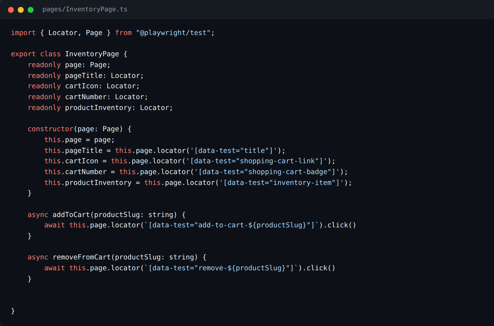
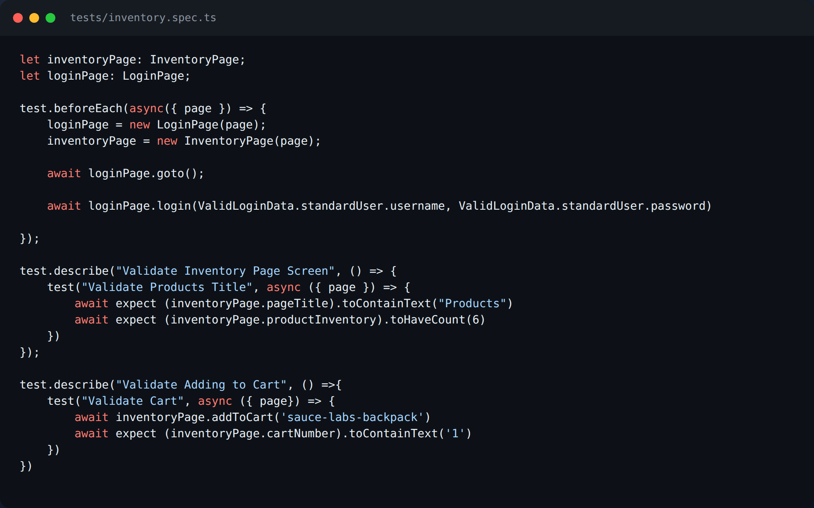
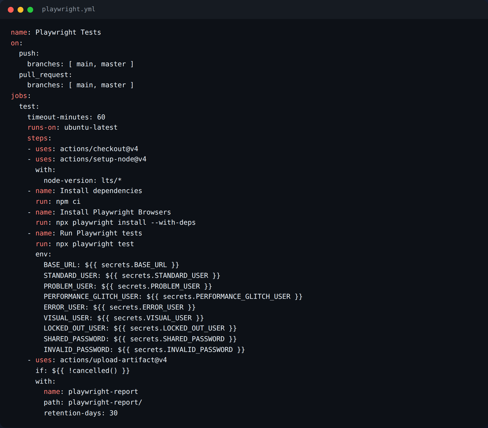
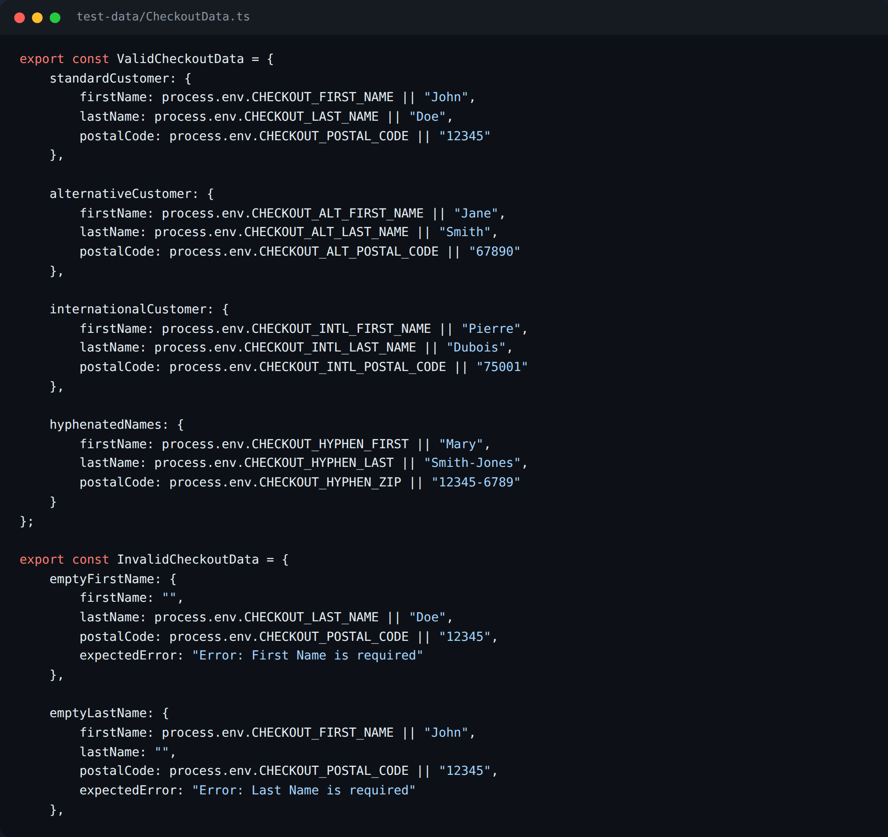

SauceDemo Test Automation Framework
A Page Object Model framework that tests the full shopper journey on SauceDemo: login, inventory, cart and checkout. Page objects hold locators and actions, specs hold behavior and assertions, and test data lives in its own folder.
- 30 tests across login (5), inventory/cart (5) and checkout (20), grouped in nested
describeblocks that mirror the UI flow. - GitHub Actions runs the suite on Chromium, Firefox and WebKit on every push and pull request, and uploads the HTML report as an artifact.
- Parameterized locators such as
addToCart(productSlug)cover all 6 products, and assertions are derived from input arrays instead of hardcoded counts. - Locators target
data-testattributes, checked against the real DOM, so styling changes don't break tests.
- Playwright
- TypeScript
- Page Object Model
- Data-driven testing
- Cross-browser
- CI/CD








Screenshots are rendered from the repository's source files.